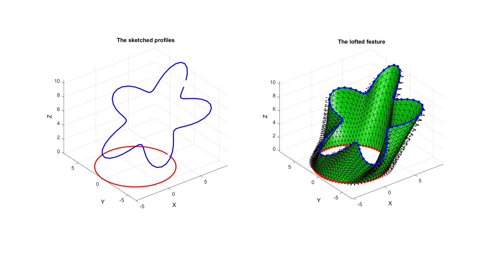

polyExtrude
Below is a demonstration of the features of the polyLoftLinear function
Contents
Syntax
[F_tri,V_tri]=polyLoftLinear(V_bottom,V_top,cPar);
Description
The polyLoftLinear function can be used to loft a surface defined by a start and end polygon. This is similar to the loft feature in CAD software.
Examples
close all; clc; %clear;
Plot settings
figColor='w'; figColorDef='white'; fontSize=15; markerSize1=25; lineWidth1=3; faceAlpha=0.5;
Creating a loft feature
Sketching profile 1
ns=75; t=linspace(0,2*pi,ns); t=t(1:end-1); r=5; x=r*cos(t); y=r*sin(t); z=zeros(size(x)); V_bottom=[x(:) y(:) z(:)];
Sketching profile 2
t=linspace(0,2*pi,ns); t=t(1:end-1); r=6+2.*sin(5*t); [x,y] = pol2cart(t,r); V_top=[x(:) y(:) z(:)]; R=euler2DCM([0 -0.2*pi 0]); V_top=(R*V_top')'; V_top(:,3)=V_top(:,3)+6; V_top(:,1)=V_top(:,1)+3;
Create loft cPar.numSteps=17;
cPar.closeLoopOpt=1;
cPar.patchType='tri_slash';
[F,V]=polyLoftLinear(V_bottom,V_top,cPar);
Plotting results
hf1=figuremax(figColor,figColorDef); subplot(1,2,1); title('The sketched profiles','FontSize',fontSize); xlabel('X','FontSize',fontSize);ylabel('Y','FontSize',fontSize); zlabel('Z','FontSize',fontSize); hold on; plotV(V_bottom,'r-','lineWidth',lineWidth1,'MarkerSize',markerSize1); plotV(V_top,'b-','lineWidth',lineWidth1,'MarkerSize',markerSize1); axis equal; view(3); axis tight; grid on; set(gca,'FontSize',fontSize); subplot(1,2,2); title('The lofted feature','FontSize',fontSize); xlabel('X','FontSize',fontSize);ylabel('Y','FontSize',fontSize); zlabel('Z','FontSize',fontSize); hold on; hp=patch('faces',F,'Vertices',V); set(hp,'FaceColor','g','EdgeColor','k','FaceAlpha',1); patchNormPlot(F,V); plotV(V_bottom,'r.-','lineWidth',lineWidth1,'MarkerSize',markerSize1); plotV(V_top,'b.-','lineWidth',lineWidth1,'MarkerSize',markerSize1); axis equal; view(3); axis tight; grid on; set(gca,'FontSize',fontSize); camlight headlight; lighting phong; drawnow;

GIBBON www.gibboncode.org
Kevin Mattheus Moerman, gibbon.toolbox@gmail.com